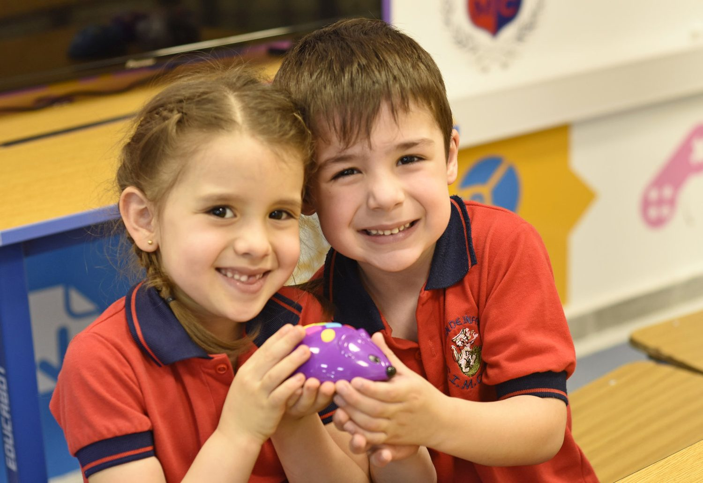
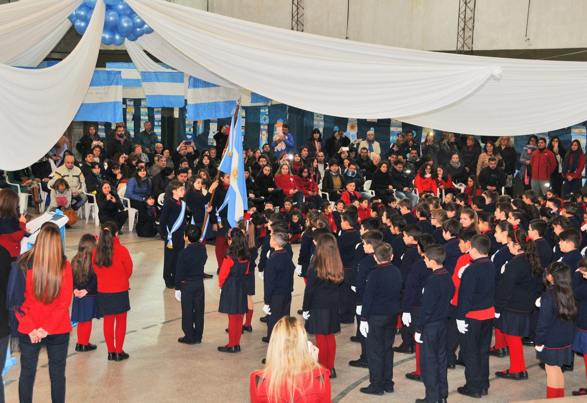
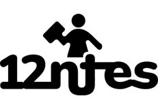
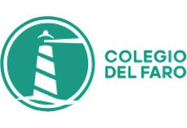
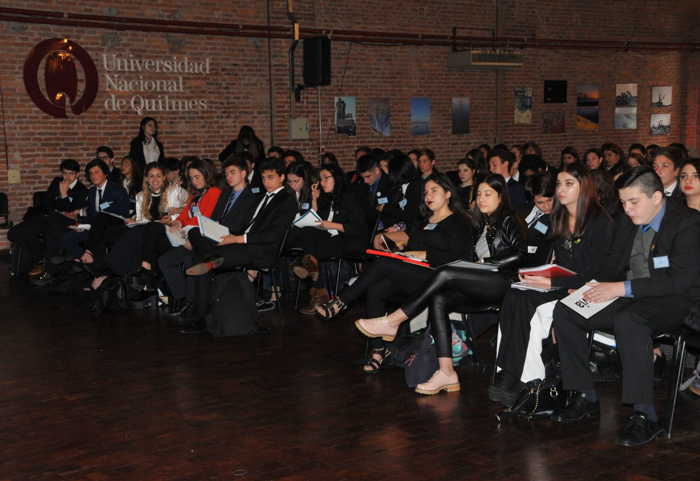
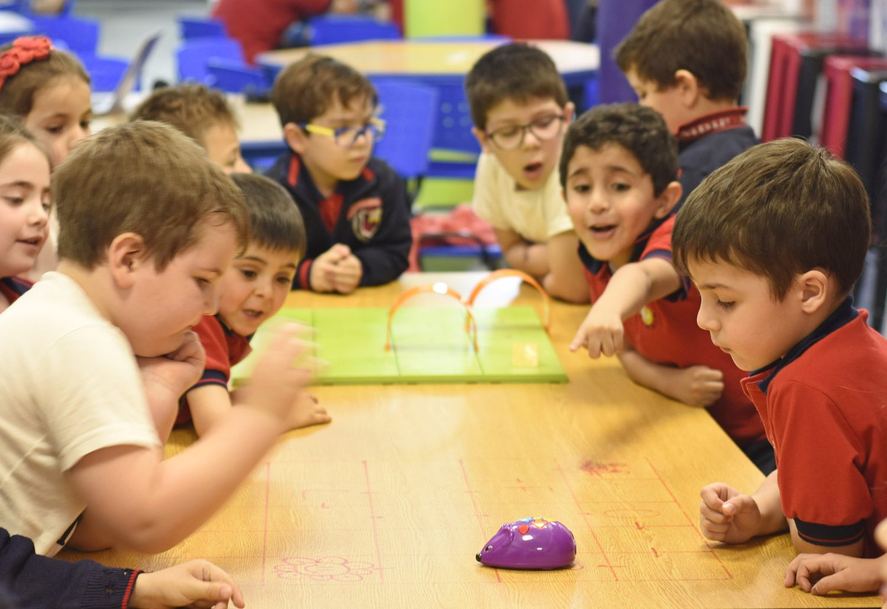
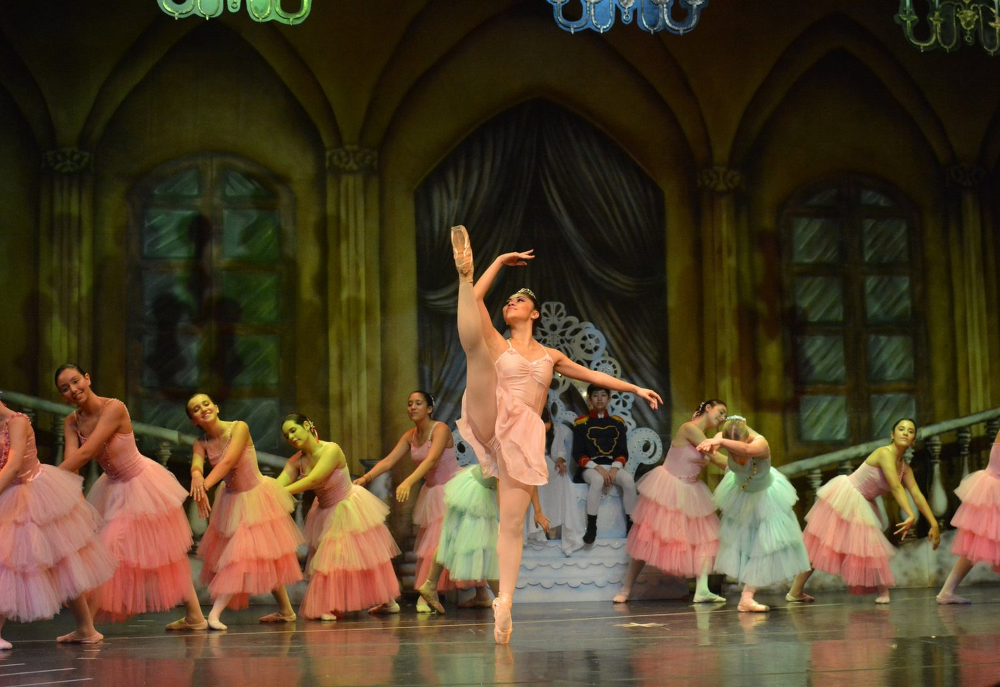
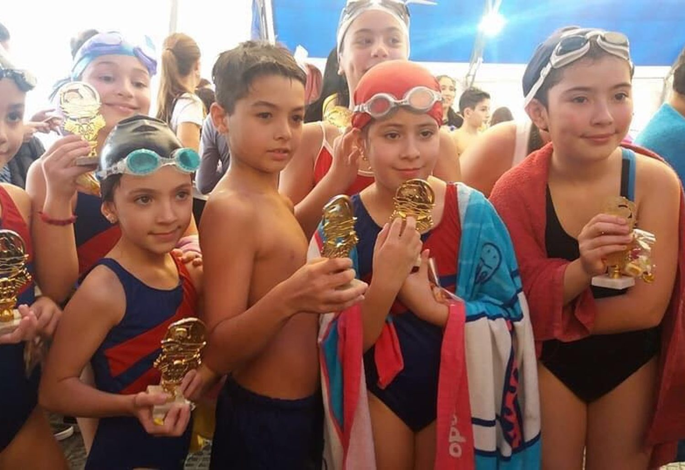
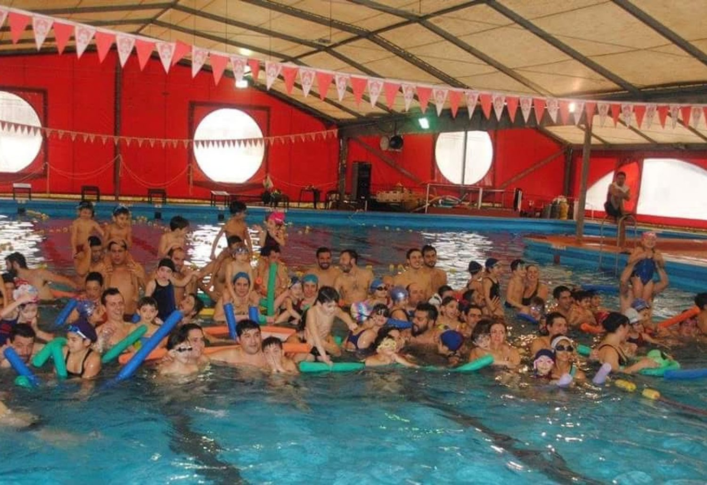
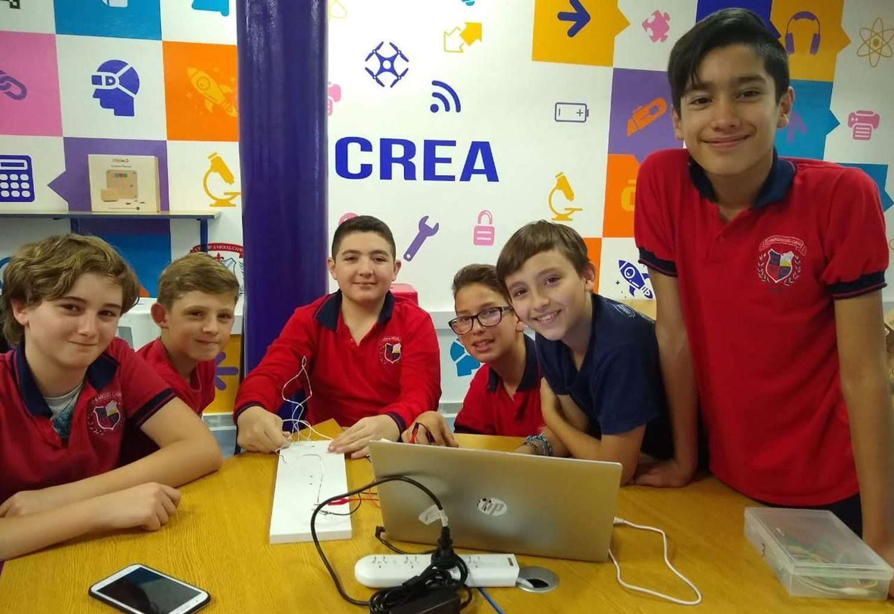

Propuesta · Confidencial

Tienen Aula Maker desde sala, sede de exámenes Cambridge, escuela de ballet con certificación internacional y 45 años de egresados. Nada de eso aparece donde las familias deciden. Esta propuesta no es de publicaciones: es el plan para que lo que ya construyeron empiece a sostener la matrícula.
En esa conversación quedaron tres pedidos concretos: un diagnóstico externo, un plan de trabajo por etapas y dos alternativas de gestión —una con la agencia haciéndolo todo y otra capacitando al equipo del colegio—. Esto es exactamente eso, con los números y los plazos puestos.
Una aclaración de método. Todo lo que sigue está verificado: lo que sale de la reunión aparece como dicho por ustedes, lo que sale de nuestra auditoría dice de dónde lo medimos, y lo que sale de datos públicos lleva la fuente. Donde falta un dato, lo pedimos. No hay una sola cifra estimada presentada como si fuera un hecho.
Popcorn empezó hace 15 años como productora audiovisual y hoy somos un equipo de alrededor de 25 personas que trabaja marketing, comunicación, contenido, pauta, desarrollo web y producción. Entre el 75% y el 80% de nuestra cartera es del sector salud, donde la decisión de compra también es de confianza, es familiar y se toma despacio.
En educación gestionamos tres colegios de la red Itínere —Northfield School, Colegio del Faro y Lighthouse— y trabajamos con 12ntes, plataforma de formación docente. Conocemos el calendario de admisión, sabemos qué cuesta traer una consulta y sabemos qué pasa cuando un colegio abre una sede nueva y la matrícula no acompaña.

Comunidad

En la reunión plantearon que la caída de la natalidad está cerrando jardines y afectando la matrícula. Lo verificamos y es correcto —incluso más marcado de lo que se suele decir—. Pero hay una segunda parte del diagnóstico que cambia la prioridad de las acciones.
De 777.012 nacimientos en 2014 a 413.135 en 2024. La tasa de fecundidad está en 1,23 hijos por mujer. En 2024, en provincia de Buenos Aires y CABA las defunciones superaron a los nacimientos por primera vez en la historia estadística del país.
Fuente · DEIS, Ministerio de Salud · serie 2014-2024La provincia de Buenos Aires perdería 510.433 alumnos de primaria hacia 2030, la mayor caída absoluta del país. El escalón más fuerte en el ingreso a primaria ya ocurrió: −14,7% en 2026. Secundaria tiene colchón hasta 2031.
Fuente · Argentinos por la Educación · enero 2026La morosidad en colegios privados pasó de 7% a 11% interanual, y en zonas del AMBA ya supera el 20%. Los hogares con más de tres deudas pasaron del 8% al 28,4% entre julio de 2024 y agosto de 2026.
Fuente · relevamientos de cámaras del sector y consumo · 2026Acá está la corrección más importante que les traemos. Buscamos evidencia de la fuga masiva hacia colegios más baratos y no aparece. El estudio de FLACSO sobre 25 años de series y 600 familias muestra la matrícula privada de secundaria estable en 27% durante un cuarto de siglo, y la cámara de institutos privados de la provincia declara expresamente que no ve pases a la escuela estatal. Lo que sí está medido es la morosidad. La conclusión práctica: la familia mayoritariamente no se va, se queda y le cuesta pagar. Y eso se trabaja distinto —comunicando valor hacia adentro, no solo saliendo a buscar afuera—.
Una consecuencia que nos obliga a los dos. La Dirección General de Cultura y Educación siguió fijando topes de aumento de cuotas —5,5% en agosto y 2,5% en septiembre de 2026—. Con cerca del 80% de la estructura de costos en salarios atados a paritaria y el precio topeado —si el colegio tiene aporte estatal, todavía más—, la palanca de rentabilidad por precio es mínima. Quedan dos: volumen de matrícula y cobrabilidad. El volumen es el que esta propuesta se compromete a mover; sobre la cobrabilidad, la comunicación de valor ayuda, y lo medimos desde el primer mes.
Auditamos el sitio, el Instagram y el circuito de admisión. Lo que sigue no son opiniones de estilo: es lo que una familia se encuentra hoy, antes de conocerlos. Cada punto se puede comprobar en dos minutos.
Aparece en las cinco páginas que auditamos. Una institución que se presenta como innovadora y en crecimiento permanente muestra una fecha de hace trece años en el único lugar donde el visitante busca señales de vigencia.
Verificado en el sitio · 5 de 5 páginasLa sección de preguntas frecuentes está online e indexable con el contenido de ejemplo que trae la plantilla: «I'm a question. Click here to edit my style», y categorías numeradas de «CATEGORY 1» a «CATEGORY 6». El sitio además se declara en inglés a los buscadores, y el ícono de YouTube apunta al canal de demostración de Wix, no al del colegio.
Verificado · página /faq indexable«Billingue» en la sección de extensión bilingüe, «la mejores escuela para sus hijos» en la portada, «KINDERGARDEN» como título de sección y «Ajedréz» en la descripción que ve Google. Son detalles que, en la categoría educativa, la familia lee como una señal sobre el nivel académico.
Verificado en el sitioEl de admisión es un formulario de Google alojado fuera del sitio: la familia necesita dos clics y un salto a otro dominio para dejar sus datos, y el botón está por debajo del carrusel. Al ser externo, hoy es imposible saber cuántas consultas generó Instagram, cuántas el boca a boca y cuántas una búsqueda. Esa ceguera es la razón por la que todavía no recomendamos invertir en pauta.
Verificado · circuito de admisión completoEn la reunión lo plantearon como una elección. La auditoría muestra que es una consecuencia: el canal no existe en el sitio, ni en el enlace del perfil de Instagram, y los teléfonos de la portada están sin código de área. Los dos competidores directos sí lo tienen, y además segmentado por nivel.
Verificado · sitio, Instagram y competenciaNo tiene definida la imagen de vista previa. Cuando una familia pasa el enlace del colegio por WhatsApp —que es exactamente como se mueve la recomendación en esta zona— llega un rectángulo gris con texto. El canal más importante que tienen, el boca a boca, viaja sin una sola foto de las instalaciones.
Observado · vista previa sin imagen al compartirHay reputación acumulada de familias reales en un portal de búsqueda de colegios, y la ficha no está reclamada por la institución. No se responde, no se actualiza y no se usa. Mientras tanto, el sitio propio no tiene un solo testimonio.
Verificado · portal Micole, 18/09/2026La página del cuadro de honor publica nombre, apellido y promedios de alumnos del secundario, indexable por buscadores, y el sitio no tiene política de privacidad pese a tener formularios activos y galerías con menores. Lo señalamos porque es el único punto de esta auditoría que no es una oportunidad comercial sino una exposición a resolver.
Verificado · a revisar con la direcciónContra lo que suele pasar, el problema de CIMDIP no es que le falte producto. Aula Maker desde inicial, sede de exámenes Cambridge, certificaciones de Digital House para secundaria, escuela modelo de las editoriales, sede oficial de exámenes de la American Academy of Ballet, tres salones de ballet con pisos especializados, gabinete psicopedagógico, comedor con nutricionista, natación, hockey en cancha reglamentaria y polideportivo.
Esa lista es de un colegio de otra categoría de precio. Y sin embargo, la comunicación que la acompaña habla de contención, valores y familia: exactamente el mismo discurso que usa, a un cuarto del precio, el colegio que ustedes identifican como el que les copia los proyectos.
Ahí está la pelea perdida de antemano. Si los dos decimos lo mismo, gana el más barato. Un proyecto educativo se copia en un ciclo lectivo. 45 años de convenios, certificaciones internacionales y egresados, no.

No se copiaEl reposicionamiento que proponemos. Dejar de ser «el colegio más caro de Quilmes Oeste» —que obliga a pedir disculpas por el precio— y pasar a ser el piso de la educación completa: todo lo que en Quilmes centro se paga varias veces más, acá está resuelto sin salir del barrio. No se baja el precio: se cambia con quién nos comparamos.
Relevamos los perfiles públicos de los colegios de la zona el 18 de septiembre. El dato que más nos llamó la atención no es cuántos seguidores tienen ustedes: es cómo los consiguieron.
| Colegio | Seguidores | Sigue a | Ratio | Enlace a admisión | |
|---|---|---|---|---|---|
| Innova | 8.707 | 3 | 2.902 : 1 | Sí, por nivel | Bajo dos enlaces de búsqueda de personal |
| CIMDIP & Miguel Cané | 8.573 | 1.781 | 4,8 : 1 | No existe | Primero, pero entre cinco opciones |
| Manuel Belgrano (Vigil) | 6.548 | 590 | 11 : 1 | Sí, 3 líneas por nivel | Directo a la página de admisión |
| Colegio Alemán (Holmberg) | 6.093 | 89 | 68 : 1 | — | Enlace múltiple |
| Sagrado Corazón Quilmes | 2.889 | 17 | 170 : 1 | — | Sitio + 4 enlaces |
Perfiles públicos de Instagram, observados el 18/09/2026.
Innova sigue a 3 cuentas y tiene 8.707 seguidores. CIMDIP sigue a 1.781 para tener 8.573. Con 1.700 alumnos y 200 empleados, eso da cinco seguidores por alumno y dos generaciones de egresados sin capturar. Corregido por tamaño, es el desempeño orgánico más flojo del grupo.
Y esperar. Los dos competidores directos responden por WhatsApp segmentado por nivel. Es la pérdida más cara del recorrido y, al mismo tiempo, la más barata de resolver: se arregla en la primera semana de trabajo.
Los perfiles relevados le hablan a las familias que ya están adentro. Ninguno produce contenido para quien está comparando: cómo elegir un colegio, qué preguntar en una visita, qué mirar en el paso a secundaria. Es el terreno más barato de ocupar y no tiene dueño.
Y acá el hallazgo que más nos sorprendió. El 18 de septiembre consultamos las bibliotecas públicas de anuncios de Meta y de Google para ver qué colegios de la zona están pautando. De todos los relevados, uno solo tiene campañas activas: St. George’s, con 16 anuncios en Meta y 8 en Google. Es el colegio de cuota más alta de la zona, el que juega en otra categoría de precio. Innova, Manuel Belgrano, el Colegio Alemán y el Sagrado Corazón no tienen ninguna campaña activa, y ustedes tampoco. Significa dos cosas. La primera: la ventaja de Innova no es un presupuesto de publicidad que ustedes no tienen. La segunda, más importante: en el segmento donde ustedes compiten, el espacio publicitario está vacío. El primer colegio que lo ocupe va a pagar por cada consulta menos de lo que pagará el segundo.
El orden no es un detalle de presentación: es la diferencia entre gastar y construir. Salir a captar con el circuito de admisión roto es pagar para perder consultas. Por eso el primer frente es el más barato y el que más rinde.
Es el frente con más volumen y menos costo. Son 1.700 familias que ya eligieron y que hoy comparan una cuota contra otra sin tener idea de lo que hay del otro lado. Sostener a esas familias vale exactamente lo mismo que sumar familias nuevas, y cuesta mucho menos.
Construir el argumento de relación precio-prestación que hoy no tiene dueño en la zona: comedor, docentes y proyectos compartidos —según nos contaron— con colegios de cuota cuatro veces mayor, y una propuesta deportiva y artística que ningún competidor de su rango reúne. La comparación se elige, no se sufre.
WhatsApp, formulario propio y medición primero. Después, campañas para atraer a las familias que hoy pagan el doble en Quilmes centro y a las que están fuera del radio habitual del colegio. Traer tráfico a un circuito ciego es tirar plata, y preferimos decirlo antes que después.
Diagnóstico, datos propios del colegio y definición de públicos.
Identidad, circuito de admisión, WhatsApp y medición.
Contenido, campañas y reposicionamiento de precio.
Consultas, matrículas y reinscripción, con reunión de seguimiento.




Todo esto ya es parte de la propuesta educativa y ya está fotografiado. Hoy no se usa donde las familias deciden.
Lo dijeron ustedes en la reunión: no se llega a leer el nombre de la escuela. Ese espacio se paga igual todos los meses. El cartel del puente funcionó durante años porque se entendía en dos segundos; este no. No lo renueven hasta rehacer el arte. Es la única plata que les recomendamos dejar de gastar, y no es plata que venga a nosotros.
Hoy el Instagram institucional sigue a 1.781 cuentas. Es lo que explica que una institución de 1.700 alumnos y 45 años tenga el mismo tamaño de audiencia que un colegio abierto hace poco. No suma comunidad: diluye el perfil y ensucia lo que el colegio ve. Dejar de hacerlo no cuesta nada.
Está online y cualquiera lo encuentra buscando el nombre de un alumno. No es una oportunidad de comunicación: es una exposición innecesaria, y el sitio tampoco tiene política de privacidad. Despublicarlo mientras se revisa lleva cinco minutos.
Estamos en plena temporada de inscripción. Esto define cómo armamos la propuesta. Un plan que empiece a ejecutar en noviembre no está vendiendo el ciclo 2027: está vendiendo el 2028. Por eso separamos el trabajo en dos velocidades distintas, con precios distintos, y no en un único paquete anual.
Arreglar el circuito de admisión, abrir WhatsApp, poner una landing que convierta y salir a buscar las consultas que todavía están en juego. Por eso el cronograma pone la landing en la segunda semana y las campañas en la tercera: firmando ahora, salimos a mediados de octubre. Es lo urgente y tiene fecha de vencimiento: en marzo ya no sirve.
Reposicionamiento, contenido, comunidad interna, egresados y reputación. Es lo que hace que el ciclo 2028 no dependa de una campaña, y lo que sostiene la cuota cuando el mercado se achica.
Lo que necesitamos de ustedes para afinar esto. Hay cuatro datos que tiene el colegio y nosotros no: matrícula propia por nivel de los últimos cinco años, morosidad propia, tasa de reinscripción por nivel y porcentaje de aporte estatal. No son un trámite: si la morosidad está en el 11% del promedio del mercado, el problema es del contexto y la respuesta es captar; si está en 25% o 30%, el problema es propio y la primera prioridad cambia. Los pedimos en la primera semana y el diagnóstico los incorpora.
Es la base común a los dos modelos de trabajo. Sin esto, cualquier inversión posterior en comunicación rinde menos de lo que debería.
Auditoría completa de sitio, redes, circuito de admisión y competencia, incorporando los datos propios del colegio. Definición de públicos prioritarios, plan de captación y retención, rediseño del recorrido de admisión y tablero de indicadores. Se entrega como documento ejecutivo y se presenta en reunión.
Entregable · documento ejecutivo y reunión de presentaciónNormativa de marca sobre el logo que ya tienen y está registrado: paleta, tipografías, grilla, iconografía, criterios de fotografía y aplicaciones. No rehacemos el logo. Queda como manual operativo para que el diseñador del colegio produzca con criterio propio y todo salga parejo.
Entregable · manual de marca y plantillas editablesUna página enfocada solo en convertir: formulario corto de seis campos, propuesta académica resumida, prueba social, WhatsApp integrado y medición completa. Es la que usamos con Northfield y la que les mostramos en la reunión. No reemplaza al sitio institucional: lo descarga de una función que hoy no cumple.
Incluye · Analytics, Tag Manager, píxel de Meta y etiqueta de Google AdsEstrategia de medios, apertura y configuración de las cuentas de Meta y Google, medición y conversiones, arquitectura de campañas, audiencias y el primer set de creatividades por formato. Es lo que hace que, desde el primer peso invertido, se sepa qué funciona.
Entregable · cuentas configuradas, campañas armadas y creatividades por formatoReordenamiento de Instagram y Facebook y apertura del perfil institucional de LinkedIn: línea gráfica, estructura de destacadas, biografía y enlaces —hoy la admisión compite con cuatro opciones más—, pilares de contenido, grilla modelo y guía de publicación. Incluye pasar el contacto del perfil a una casilla institucional.
Entregable · tres perfiles ordenados, grilla modelo y guía de publicaciónEl pie de página de 2013, la página con el texto de plantilla en inglés, el enlace al canal de demostración de Wix, el idioma declarado del sitio, la imagen de vista previa para que el enlace viaje con foto por WhatsApp, los errores de ortografía de los titulares y el reclamo de la ficha con 180 valoraciones. Entra en la Etapa 1, no se cobra aparte.
Es la pregunta que dejaron planteada en la reunión: si conviene un servicio integral de la agencia o apoyarse en gente de la casa. Vamos a ser claros con algo, porque simplifica la decisión: el servicio que reciben todos los meses es el mismo en los dos modelos, y por eso vale lo mismo. Lo único que cambia es quién sale a capturar el día a día del colegio y cada cuánto nos sentamos con ustedes.
Idéntico en los dos modelos: la gestión de Instagram, Facebook y LinkedIn —12 posteos, 5 videos y stories por mes, con el diseño, la edición, la redacción, la publicación y la moderación a cargo de Popcorn— y la gestión de pauta en Meta y Google, con su reporte mensual. Nada de eso se delega ni se recorta: es el piso de los dos caminos.
Nuestra recomendación honesta, sabiendo que somos parte interesada. En la reunión contaron que ya tienen personal sacando material y que lo que falta es profesionalizarlo. Si eso se sostiene, el Modelo B es mejor negocio para ustedes y lo decimos aunque facturemos bastante menos. La condición es una sola y conviene ponerla por escrito: que haya una persona designada con la obligación de capturar y enviar el material cada semana. Si en cambio el colegio prefiere no depender de eso durante la temporada de admisión, el Modelo A lo resuelve sin que nadie de la casa tenga que acordarse.
Hay un tercer camino que conviene mirar: empezar con el Modelo A durante el sprint de cierre del ciclo 2027 —de octubre a febrero, que es cuando no hay margen de error— y pasar al Modelo B en marzo, con el personal del colegio ya capacitado y con el sistema andando. Es el que más veces vimos funcionar.
Preferimos que esto quede escrito desde el primer día. Es lo que evita las conversaciones incómodas del mes cinco.
Contrato mínimo de tres meses. Después, cualquiera de las dos partes puede darlo de baja avisando con 30 días. El mes en curso se factura completo.
Todas las piezas, los archivos editables, la landing y las cuentas publicitarias son propiedad del colegio y quedan en su poder si dejamos de trabajar juntos. La landing se migra a su hosting sin costo.
Trabajamos con bancos licenciados para uso comercial. Las licencias quedan a nombre del colegio y su alcance y vigencia se detallan por pieza. No usamos música ni imágenes sin derechos.
Se agendan con dos semanas de anticipación. Una jornada cancelada con menos de 48 horas de aviso se considera realizada; reprogramar con más aviso no tiene costo.
Los contratos de más de tres meses se ajustan por índice de precios al consumidor. El ajuste se avisa con un mes de anticipación y nunca se aplica de forma retroactiva.
Firmamos acuerdo de confidencialidad antes de empezar. Trabajamos con otros colegios y cada cuenta tiene equipo y documentación separados: la información de ustedes no se usa en ninguna otra.
Todos los valores salen de nuestro tarifario de septiembre-octubre de 2026 y están calculados rol por rol según el equipo que interviene. Son sin IVA. La inversión en medios va aparte y tiene su propia sección.
$0 + IVA. Es más barato porque el colegio no nos traslada el costo financiero.
$0 + IVA en total, en dos pagos iguales.
El servicio mensual se factura 100% por mes adelantado al valor de lista: el descuento del 3% aplica solo a los trabajos por única vez. Los contratos de más de tres meses se ajustan por índice de precios al consumidor. Valores sin IVA, en pesos, válidos hasta el 28 de septiembre de 2026.
No inventamos proyecciones. Lo que sigue sale de las cuentas publicitarias de dos colegios que gestionamos, durante los últimos doce meses.
En Meta y Google, entre septiembre de 2025 y septiembre de 2026.
Conversiones registradas en las cuentas de esos colegios.
El canal más eficiente de los dos para este público.
Más caro, pero capta a quien ya está buscando colegio.
Datos propios de Popcorn · 2 colegios gestionados · 01/09/2025 al 17/09/2026. Se presentan agregados por confidencialidad de esas cuentas.
Mezcla de 60% en Meta y 40% en Google. Elijan uno y viaja en el correo junto con los servicios.
Cómo se cobra la pauta. Los montos de abajo son netos y los abona el colegio directamente a las plataformas: a eso hay que sumarle impuestos y percepciones, que según la forma de pago van del 40% al 52% adicional y también los paga el colegio. Del lado de Popcorn, la gestión tiene un fee fijo mensual —el de la sección anterior— más un 15% sobre la inversión neta efectivamente ejecutada en plataformas. No lo expresamos en pesos a propósito: depende del escenario que elijan y del consumo real de cada mes. La base de ese 15% es únicamente la inversión en medios; no incluye producción, cachés ni canjes.
| Plataforma | Para qué | Inversión neta | Costo por consulta | Consultas/mes |
|---|---|---|---|---|
| Meta Ads | Generar demanda en el radio del colegio y retomar a quien ya visitó | $900.000 | $20.350 | 44 |
| Google Ads | Captar a quien busca «colegio en Quilmes» ahora mismo | $600.000 | $32.900 | 18 |
| Total | $1.500.000 | $24.194 | 62 |
| Plataforma | Para qué | Inversión neta | Costo por consulta | Consultas/mes |
|---|---|---|---|---|
| Meta Ads | Demanda, reposicionamiento de precio y retargeting | $1.500.000 | $20.350 | 74 |
| Google Ads | Búsquedas de alta intención en Quilmes y partidos vecinos | $1.000.000 | $32.900 | 30 |
| Total | $2.500.000 | $24.038 | 104 |
| Plataforma | Para qué | Inversión neta | Costo por consulta | Consultas/mes |
|---|---|---|---|---|
| Meta Ads | Cobertura de toda la zona sur, por nivel y por interés | $2.400.000 | $20.350 | 118 |
| Google Ads | Búsqueda, más presencia en YouTube y Display | $1.600.000 | $32.900 | 49 |
| Total | $4.000.000 | $23.952 | 167 |
Dos honestidades sobre estos números. La primera: durante los dos primeros meses conviene prever un costo por consulta hasta 25% mayor, porque la cuenta arranca sin historial de aprendizaje. La segunda, más importante: una consulta no es una matrícula. Es un contacto que entra al circuito de admisión del colegio. Cuántas de esas consultas terminan en matrícula lo define el proceso de ustedes, y por eso no lo proyectamos: lo vamos a medir desde el primer mes, que es algo que hoy todavía no se puede hacer.
Una cuota de jornada simple está en torno a los $350.000 y son diez cuotas por ciclo: cada alumno nuevo representa cerca de $3.500.000 de facturación anual. Con eso se puede hacer la cuenta completa de esta propuesta.
| Escenario de 6 meses | Honorarios | Medios | Fee variable | Inversión total | Alumnos para cubrirla | Sobre 1.700 |
|---|---|---|---|---|---|---|
| Modelo B · capturan ustedes | $34.132.000 | $15.000.000 | 15% s/ medios | $51.382.000 | 15 | 0,9% |
| Modelo A · capturamos nosotros | $45.863.000 | $15.000.000 | 15% s/ medios | $63.113.000 | 19 | 1,1% |
Incluye la Etapa 1 completa y seis meses del modelo, con el escenario de medios recomendado sostenido; el fee variable del 15% está calculado sobre esa inversión y varía con el consumo real de cada mes. Valores sin IVA y sin los impuestos y percepciones de plataforma detallados en la sección anterior.
Entre quince y diecinueve alumnos sobre una matrícula de 1.700. Alrededor del uno por ciento del alumnado paga el programa completo, medios incluidos, durante medio año.
Quince familias que no se van valen exactamente lo mismo que quince familias nuevas. Y retenerlas es más barato que conseguirlas. Por eso el primer frente del plan mira hacia adentro.
Un alumno que entra en maternal puede quedarse hasta el último año del secundario. La cuenta de arriba es conservadora: mide solo el primer ciclo lectivo.
Firma de confidencialidad y contrato. Reunión de inicio y pedido de los cuatro datos del colegio. Corregimos el pie de página de 2013, la página con el texto de plantilla, el enlace al canal de demostración, el idioma del sitio y la imagen de vista previa. Abrimos el WhatsApp de admisión y reclamamos la ficha con 180 valoraciones.
Publicamos la landing de captación con formulario propio, WhatsApp y medición completa, y dejamos configuradas las cuentas de Meta y Google. Va primero, antes que el diagnóstico y antes que la identidad, porque es lo único que convierte: todo lo demás puede esperar dos semanas, la temporada de admisión no. Desde acá se puede saber, por primera vez, de dónde viene cada consulta.
Salen las primeras campañas de captación de matrícula 2027, con el embudo ya cerrado y medido. A partir de acá el reporte mensual tiene números reales para leer.
Auditoría completa con los datos propios ya incorporados, definición de públicos y plan de captación. En paralelo, el sistema de identidad visual y la entrega del manual operativo al diseñador del colegio. Corren en paralelo a propósito: ninguno de los dos bloquea la salida de las campañas.
Reordenamiento de los perfiles ya con el sistema visual definido: línea gráfica, destacadas, biografía, enlaces y pilares de contenido. Apertura del perfil institucional de LinkedIn.
Campañas activas, contenido semanal, captura del día a día del colegio y comunicación hacia la comunidad interna. Reuniones de gestión con la dirección —semanales en el Modelo A— y reporte de admisión. Es la ventana en la que se define la matrícula del año que viene.
Se construye durante el verano, cuando la demanda de admisión baja y el colegio tiene margen para revisar contenidos sin apuro. Es la Etapa 3 y se decide más adelante, con los primeros resultados sobre la mesa.
Con el ciclo 2027 cerrado y los números a la vista, revisamos qué funcionó y decidimos juntos si conviene seguir con gestión integral o pasar al modelo de capacitación con el equipo del colegio ya formado.
Estos son los números del reporte mensual. Los cinco primeros hoy no se pueden medir; a partir de la sexta semana, sí.
Cuántas llegaron de campañas, cuántas de búsqueda, cuántas de Instagram y cuántas del boca a boca. Es el dato que hoy se pierde por completo.
Cuánto costó cada contacto, por plataforma. Es lo que permite decidir dónde poner el peso siguiente.
Qué porcentaje de las familias que consultan llega a la visita guiada. Mide si el circuito de admisión acompaña.
El número que define el negocio. Con él se sabe cuánto vale realmente una consulta y cuánto conviene invertir.
Cuánto tarda el colegio en contestar una consulta. En categorías de decisión familiar, es el factor que más mueve la conversión.
Separadas por nivel, para ver dónde está funcionando y dónde hay que reforzar. Maternal y sala de un año tienen seguimiento propio.
El indicador de retención. Con el paso de sexto y séptimo grado marcado aparte, que es donde aparece la fuga hacia los bilingües del centro.
Lo seguimos aunque no sea una métrica de marketing, porque es una de las dos palancas de rentabilidad que quedan y la comunicación de valor le pega directo.
Valoraciones y reseñas en Google y en los portales de búsqueda de colegios, con las respuestas al día.
La cuenta la conducen las dos personas que estuvieron en la reunión. Detrás trabaja un equipo con roles definidos y dedicación asignada, no un grupo que rota según la semana.
General Manager · Paid Media. Conduce la estrategia de la cuenta y la inversión en medios. Es quien hizo la auditoría en vivo durante la reunión.
Operations Manager. Responsable de que lo prometido se entregue en tiempo y forma, y de la relación con el equipo del colegio.

Su cuentaLos perfiles que intervienen según el trabajo: Project Manager Senior y Semi Senior, Supervisión de Gerencias, Analista de Marketing, Coordinación y Análisis de Paid Media, Dirección Creativa, Dirección de Arte, Diseño Senior, Coordinación Audiovisual, Content Creator, Community Manager, Edición y Asistencia de Cuentas. Cada valor de esta propuesta se armó sobre la dedicación real de cada uno de estos roles, no sobre un precio de lista cerrado.
Léanla con tiempo y anoten todo lo que no cierre. Desde la selección de inversión pueden mandarnos directamente qué les interesa.
Nos vemos en el colegio un lunes, o en nuestras oficinas de Chacarita. Repasamos el diagnóstico punto por punto y ajustamos el alcance.
Firmamos el acuerdo de confidencialidad y el contrato de locación de servicios. Protege la información de las dos instituciones.
Accesos, los cuatro datos del colegio y las correcciones urgentes del sitio. En siete días ya hay cosas arregladas.
Una última cosa, y es la que más nos importa. Si de esta propuesta no sale nada, igual llévense el diagnóstico: el pie de página de 2013, la página en inglés, el enlace al canal de demostración, el WhatsApp que no existe y la ficha con 180 valoraciones sin reclamar se arreglan con o sin nosotros. Ya sea que trabajen con Popcorn o con otra agencia, esas correcciones valen la pena.
El producto ya está construido. Lo que falta es que se note, y que cuando una familia levante la mano, alguien le conteste rápido.